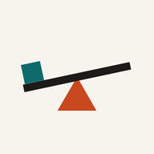
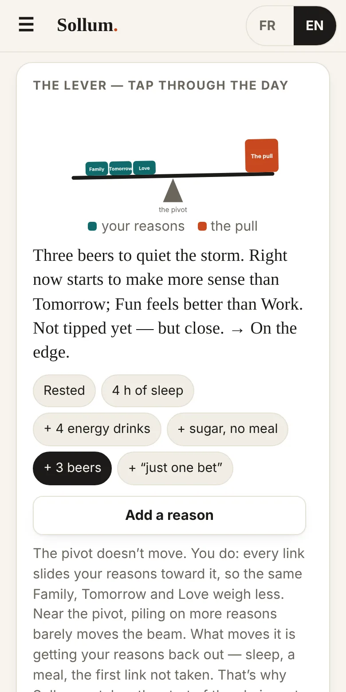
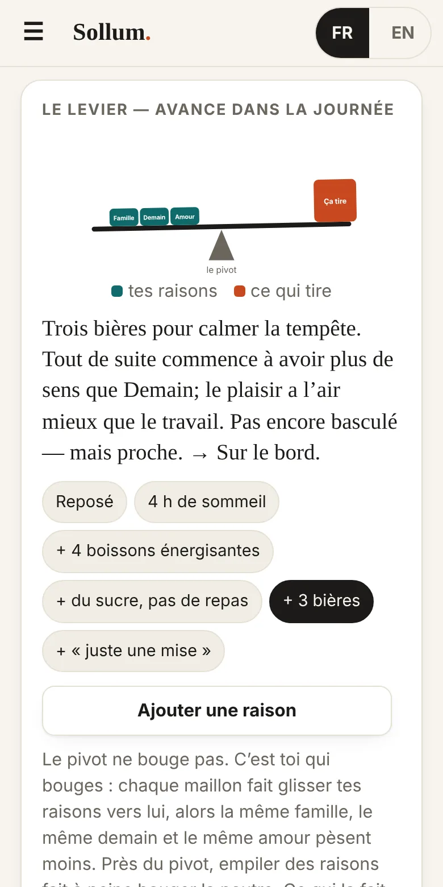
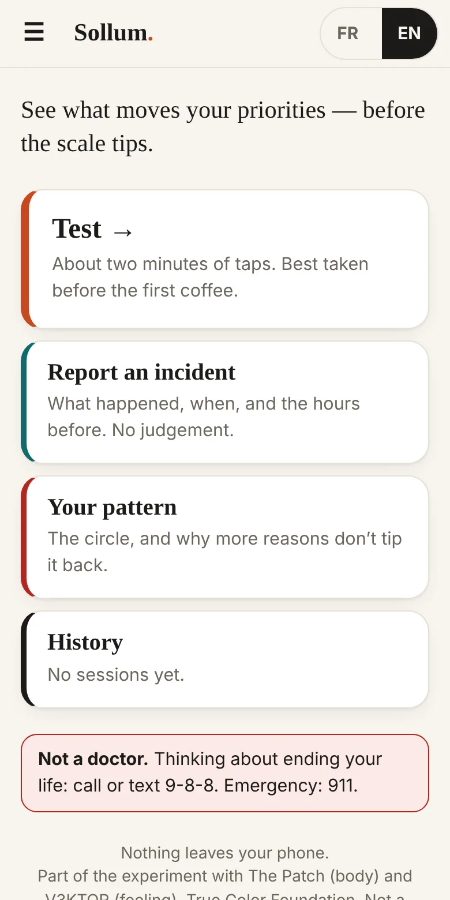
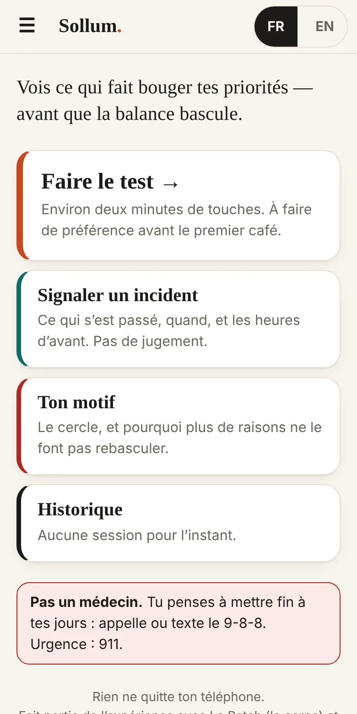
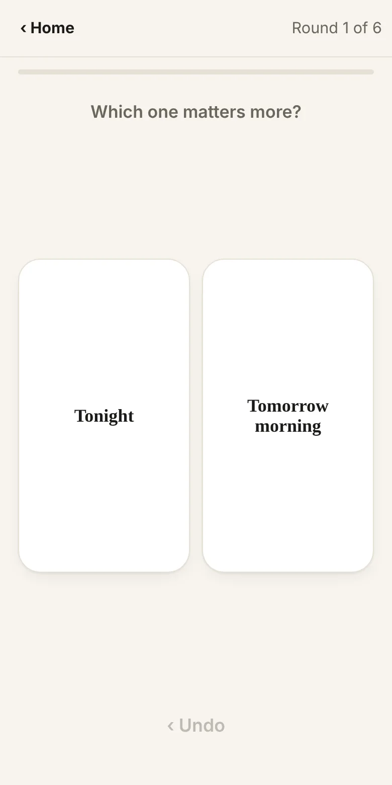
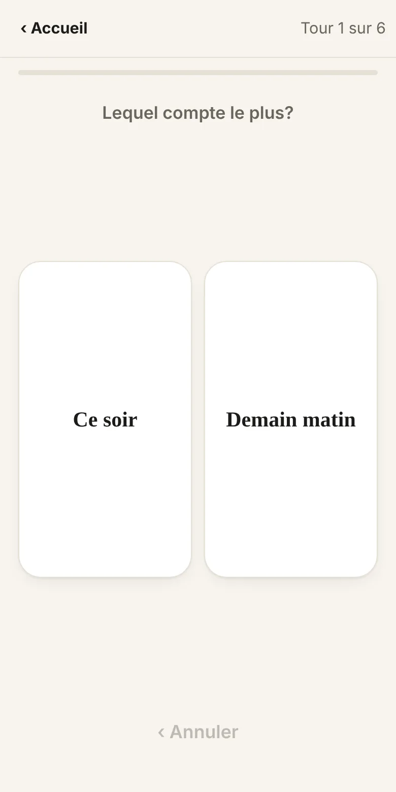
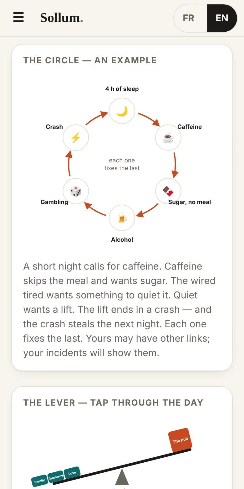
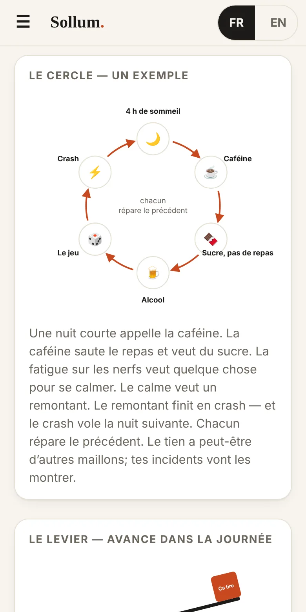

Sollum. v3ktor.orgNobody wakes up and decides to throw away tomorrow. It happens one link at a time.Personne ne se lève en décidant de sacrifier demain. Ça arrive un maillon à la fois.
Sollum asks you to choose between pairs of words — Tomorrow or Right now, Enough or More. On a rested day you get your normal order. After four hours of sleep, four energy drinks and three beers, it shows what moved, and the chain that came before.Sollum te demande de choisir entre des paires de mots — Demain ou Tout de suite, Assez ou Encore. Une journée reposée, tu obtiens ton ordre normal. Après quatre heures de sommeil, quatre boissons énergisantes et trois bières, il montre ce qui a bougé, et la chaîne qui est venue avant.
No account. No ads. Nothing leaves your phone. Not a diagnosis.Pas de compte. Pas de pub. Rien ne sort de ton téléphone. Ce n’est pas un diagnostic.


The pivot doesn’t move. You do.Le pivot ne bouge pas. C’est toi qui bouges.
Your reasons — family, tomorrow, love, work — sit on one side of a scale. The pull sits on the other. Every link in the day (a short night, the fourth coffee, no meal, the first drink) slides your reasons closer to the pivot. They don’t weigh less; they just lose their leverage.Tes raisons — la famille, demain, l’amour, le travail — sont d’un côté de la balance. Ce qui tire est de l’autre. Chaque maillon de la journée (une nuit courte, le quatrième café, pas de repas, le premier verre) fait glisser tes raisons vers le pivot. Elles ne pèsent pas moins; elles perdent leur levier.
That’s why, close to the pivot, piling on more reasons barely moves the beam. What moves it is getting your reasons back out — sleep, a meal, the first link not taken. The earlier you break the chain, the less it costs.C’est pour ça que, près du pivot, ajouter des raisons ne fait presque pas bouger la poutre. Ce qui la fait bouger, c’est de ramener tes raisons vers l’extérieur — le sommeil, un repas, le premier maillon pas pris. Plus tu brises la chaîne tôt, moins ça coûte.
Sollum doesn’t diagnose you and doesn’t tell you what to do. It records how you choose, lets you report what happened, and shows you the pattern in your own data — so you can see the slide while there’s still room to stop it.Sollum ne pose pas de diagnostic et ne te dit pas quoi faire. Il note comment tu choisis, te laisse signaler ce qui est arrivé, et te montre le motif dans tes propres données — pour que tu voies la glissade pendant qu’il reste de la place pour l’arrêter.
Part of V3KTOR // Mapping the Self, a series of free, open-source apps that gather data from the body at different levels: Food Trial Log (the gut), The Patch (the body), Sollum (the pivot), V3KTOR™ (the mind).Fait partie de V3KTOR // Mapping the Self, une série d’applications gratuites et à code source ouvert qui recueillent des données du corps à différents niveaux : Food Trial Log (l’intestin), La Patch (le corps), Sollum (le pivot), V3KTOR™ (l’esprit).
About two minutes of taps between pairs of words. Best before the first coffee, and again when the day gets heavy. Over a week it learns your normal.Environ deux minutes de choix entre des paires de mots. Idéal avant le premier café, et encore quand la journée devient lourde. En une semaine, il apprend ta normale.
What happened, when, and what it cost. No judgement. With The Patch on the same phone, the hours before fill in by themselves: sleep, caffeine, sugar, meals, drinks.Ce qui est arrivé, quand, et ce que ça a coûté. Sans jugement. Avec La Patch sur le même téléphone, les heures d’avant se remplissent toutes seules : sommeil, caféine, sucre, repas, verres.
The vicious circle — short night, caffeine, sugar, alcohol, the bet, the crash — and a scale you tap through to see why more reasons don’t tip it back. Your own chain shows here once you have incidents.Le cercle vicieux — nuit courte, caféine, sucre, alcool, la mise, le crash — et une balance que tu fais avancer pour voir pourquoi plus de raisons ne la redressent pas. Ta propre chaîne s’affiche ici quand tu as des incidents.
On a good day you write what you want to hear before the wrong choice, and who to call. When the readings say you’re sliding, that’s what you see — with a Call button and your province’s line.Une bonne journée, tu écris ce que tu veux entendre avant le mauvais choix, et qui appeler. Quand les lectures disent que tu glisses, c’est ce que tu vois — avec un bouton Appeler et la ligne de ta province.






The ideas behind Sollum come from addiction and decision research. The way Sollum measures them is new and hasn’t been tested yet. Here’s which is which.Les idées derrière Sollum viennent de la recherche sur les dépendances et la prise de décision. La façon dont Sollum les mesure est nouvelle et n’a pas encore été testée. Voici ce qui est quoi.
Alcohol myopia. Drinking narrows attention to what’s right in front of you; the quieter, further-off reasons are barely processed. One study found people felt strongly committed to a goal while drinking, then didn’t act on it once sober.La myopie alcoolique. L’alcool rétrécit l’attention à ce qui est juste devant toi; les raisons plus lointaines et plus discrètes sont à peine traitées. Une étude a montré que des gens se sentaient très engagés envers un but en buvant, puis n’agissaient pas une fois à jeun.
Steele & Josephs, 1990; Giancola et al., 2010; Sevincer & Oettingen, 2014
The hot-cold empathy gap. Calm and rested, people underestimate how much craving, hunger or exhaustion will change their choices. Smokers in a calm state underpredicted how much they’d want a cigarette later. So Sollum brings the calm voice into the hot moment.L’écart d’empathie chaud-froid. Calmes et reposés, les gens sous-estiment à quel point l’envie, la faim ou l’épuisement vont changer leurs choix. Des fumeurs au calme ont sous-estimé à quel point ils voudraient une cigarette plus tard. Sollum amène donc la voix calme dans le moment chaud.
Relapse prevention. A slip rarely comes out of nowhere; it’s built from small, harmless-looking choices hours earlier. And after a slip, shame (“I’ve blown it anyway”) is what turns one into a binge — which is why Sollum’s incident report is a logbook, never a grade.La prévention de la rechute. Une rechute arrive rarement de nulle part; elle se construit à partir de petits choix d’apparence anodine, des heures avant. Et après un écart, la honte (« de toute façon, c’est raté ») transforme un écart en excès — c’est pour ça que le rapport d’incident de Sollum est un journal de bord, jamais une note.
Marlatt & Gordon, 1985; Menon & Kandasamy, 2018
Tracking in daily life. Frequent short check-ins have predicted alcohol lapses in the next week, day and hour. What triggers a slip differs from one person to the next — so Sollum builds your pattern from your data, not an average. Tracking itself also helps people cut down, though the effect fades if nothing else changes.Le suivi au quotidien. De courts suivis fréquents ont prédit des écarts d’alcool dans la semaine, le jour et l’heure suivants. Ce qui déclenche un écart varie d’une personne à l’autre — Sollum bâtit donc ton motif à partir de tes données, pas d’une moyenne. Le suivi en soi aide aussi à réduire, mais l’effet s’estompe si rien d’autre ne change.
Each fix creates the next need, and the body joins in. Repeated use dulls the brain’s reward system, so each fix only relieves the last one. Inflammation has been linked to choosing “now” over “later”; a leaky gut in heavy drinkers to more craving; insulin resistance to a duller reward system. That’s why Sollum reads your day from The Patch. The body evidence is still early.Chaque solution crée le besoin suivant, et le corps s’en mêle. L’usage répété émousse le système de récompense, donc chaque solution ne fait que soulager la précédente. L’inflammation a été liée au choix de « maintenant » plutôt que « plus tard »; un intestin perméable chez les gros buveurs, à plus d’envie; la résistance à l’insuline, à un système de récompense émoussé. C’est pour ça que Sollum lit ta journée dans La Patch. Les preuves sur le corps sont encore jeunes.
Koob & Le Moal, 2001; Gassen et al., 2019; Leclercq et al., 2014; Gruber et al., 2023
This part is new. Whether hesitation on a pair, a flipped pair or a dropped level really shows up before a slip — in real people, not simulations — hasn’t been tested. Reaction times in particular are known to be noisy for one person; comparing you only with yourself helps, but doesn’t prove it.Cette partie est nouvelle. Que l’hésitation sur une paire, une paire qui bascule ou un niveau qui tombe apparaissent vraiment avant un écart — chez de vraies personnes, pas en simulation — n’a pas été testé. Les temps de réaction en particulier sont reconnus pour être bruyants chez une seule personne; te comparer seulement à toi aide, mais ne le prouve pas.
Written down before the data comes in, so the app can’t fool anyone:Écrit avant que les données arrivent, pour que l’app ne puisse tromper personne :
Even then, the record-and-report part still helps: keeping track is one of the things that works.Même là, la partie noter et signaler aide quand même : garder une trace fait partie de ce qui marche.
There’s no account and no server. Your taps, your incidents and your message live only in this phone’s browser storage. Nothing is sent anywhere unless you write something in “Improve the app” and send it yourself. Once installed, it works offline.Il n’y a pas de compte et pas de serveur. Tes choix, tes incidents et ton message vivent seulement dans la mémoire du navigateur de ce téléphone. Rien n’est envoyé nulle part, sauf si tu écris quelque chose dans « Améliorer l’app » et que tu l’envoies toi-même. Une fois installé, il marche hors ligne.
That storage isn’t encrypted: anyone who can unlock the phone can read it. Erase everything in Settings.Cette mémoire n’est pas chiffrée : quiconque peut déverrouiller le téléphone peut la lire. Tout effacer, c’est dans les Réglages.
Both live on v3ktor.org, so on the same phone and browser Sollum can read The Patch’s day summary — how you slept, your caffeine, sugar, meals and drinks — and line up the hours before an incident without you typing it twice. You can turn that off in Sollum’s settings. Each app also works on its own.Les deux vivent sur v3ktor.org, donc sur le même téléphone et le même navigateur, Sollum peut lire le résumé de journée de La Patch — ton sommeil, ta caféine, ton sucre, tes repas et tes verres — et aligner les heures avant un incident sans que tu aies à tout retaper. Tu peux couper ça dans les réglages de Sollum. Chaque app marche aussi toute seule.
It installs from the browser — no app store. It gets its own icon, opens full screen, and works offline.Ça s’installe à partir du navigateur — pas de magasin d’applis. L’app a sa propre icône, s’ouvre en plein écran et marche hors ligne.
This browser didn’t offer a one-tap install. Follow the steps for your phone below.Ce navigateur n’a pas offert l’installation en un geste. Suis les étapes pour ton téléphone plus bas.
Samsung phone? Use Chrome for this — Samsung’s own browser often fails to install apps like this one.Téléphone Samsung? Utilise Chrome pour ça — le navigateur de Samsung échoue souvent à installer ce genre d’app.